For my corpus I decided to look into the musical differences between two very popular female artists of this time: Dua Lipa and Billie Eilish. Both artists are singer-songwriters in the same genre, namely Pop music. However, they have very different sounds.
Dua Lipa is a British/Albanian artist, born in London. She is 30 years old. Lipa’s music is classified as pop music, with subgenres such as dance-pop and synthpop.
Billie Eilish is a 24-year old artist from the United States of America. Her music is also mainly labelled as pop music, with subgenres such as electropop and alt-pop.
Both artists have three studio albums, which I have used to study their musical features. Some analyses are done taking into account the complete selection of songs. This looks into energy, valence and danceability. Other features are better investigated per song. To do this I have randomly selected four longs, two of each artist. With these songs I have explored chroma features, timbre features, structure, tempo and beats.
“Be The One” is a single by Dua Lipa that came out in 2015. It was part of the album “Dua Lipa”, which is her first studio album.
“Don’t Start Now” is the first single of Dua Lipa’s second studio album, called “Future Nostalgia”. The single came out in 2019.
“Your Power” is Billie Eilishes third single from the album “Happier Than Ever”, which is her second studio album. The track was released in 2021.
“Oxytocin” is a song on the album “Happier Than Ever”, by Billie Eilish. The song came out in 2021.
I decided to randomly pick these songs to prevent bias in selecting songs that would either differ more or less, based on my personal preferences.
To draw insights into track-level features I took all three studio albums by both artists and looked into energy, valence and danceability levels. The three albums by Billie Eilish consist of 40 songs, and the albums by Dua Lipa have a total of 47 songs.
In this first graph the x-axis shows the amount of songs. The y-axis shows the energy level that is computed by the API. This is a number between 0 and 1, 0 meaning a song has a low energy level and 1 meaning a high energy level. It is visible in the graph that songs by Billie Eilish tend to have much lower energy levels, as most of her songs are classified to have a lower energy level than 0.5. Dua Lipa’s songs, on the other hand, show the opposite. Most of her songs have an energy level above 0.5.
In musical analysis the term “valence” is used to describe how positive listeners think a track sounds. Valence is measured on a scale from 0 to 1, where 0 represents a sad and negative feeling and 1 represents a happy and positive feeling. In the second graph it is visible that both artists have different levels of valence in their music. Billie Eilish’ songs are divided into more different levels than Dua Lipa’s. Just over half of Billie Eilish’ songs have a score lower than 0.5, and a little less than half score over 0.5, some songs even scoring over 0.75. Dua Lipa’s tracks are a little less divided. All of her songs have a valence level over 0.25 and are almost equally divided over the levels. There is one outlier between 0.25 and 0.50, which consists of more than 10 songs.
Danceability is a musical feature that is also shown on a scale from 0 to 1. Danceability describes the urge a listener has to dance to a song. A low level means a low urge to dance and a high level means a high urge to dance to a song. Once again the tracks by Billie Eilish show a lot of variation in danceability levels. Almost half of the songs are between 0.25 and 0.50, and almost another half is between 0.70 and 1.00. Dua Lipa’s tracks are perceived to have a higher level of danceability. Almost all songs are above 0.50, with an outlier between 0.65 and 0.75, which consists of 20 songs.
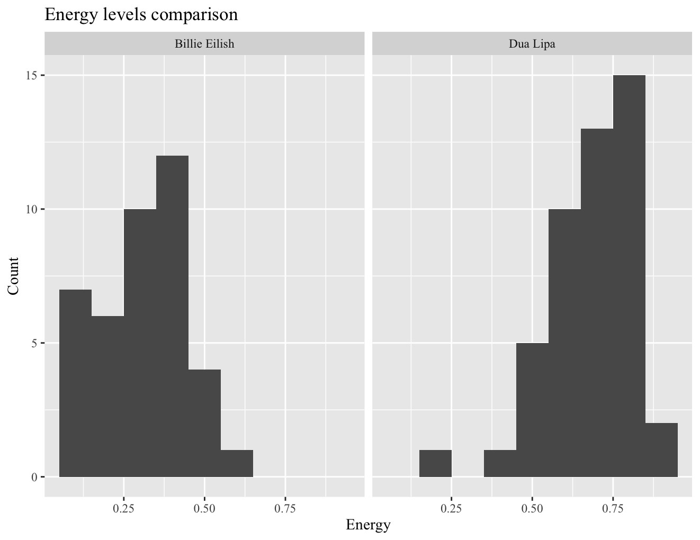
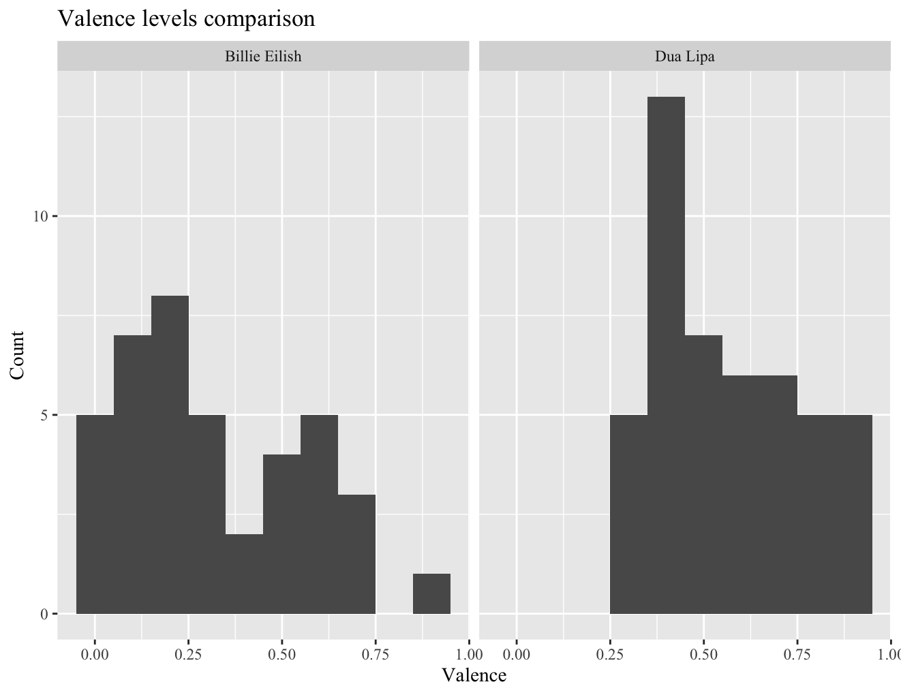
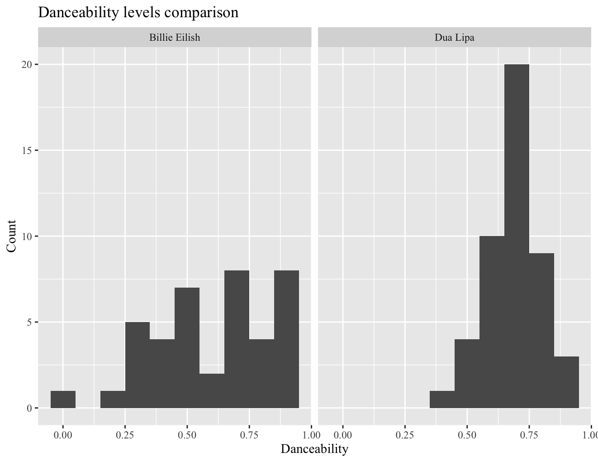
The chromagram of “Be The One” shows that the F major chord (F-A-C) is the central chord of the song. When the Eb tone is added to this F major chord it becomes the F7 chord, a dominant seventh.
The chromagram of “Don’t Start Now” shows that the B minor chord (B-D-F#) is a chord that occurs quite a lot. The tone A can be added to this chord to make it a Bm7 chord.
The chromagram of “Your Power” shows that the notes A, C and E are used most frequently, which leads to an A minor chord. Occasionally the G tone is also played, which makes an Am7 chord.
The chromagram of “Oxytocin” is slightly harder to read. There are not many tones that stick out, which makes it difficult to find a central chord. However, the E and G are most present in the song. Combine those with a G and it seems that E minor could be a central chord in the song.
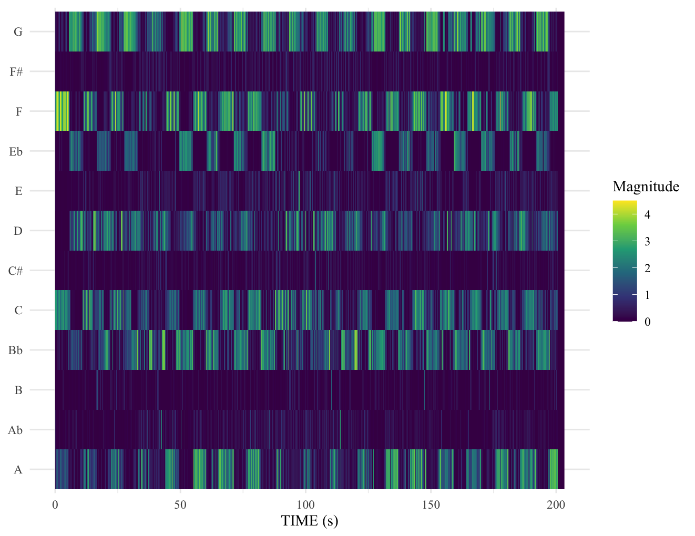
Chromagram of ‘Don’t Start Now’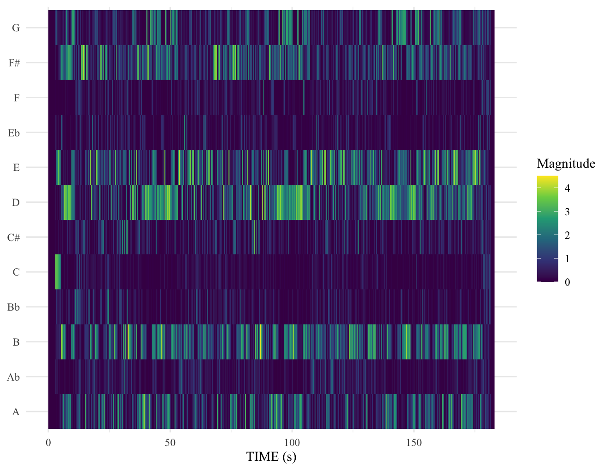
Chromagram of ‘Your Power’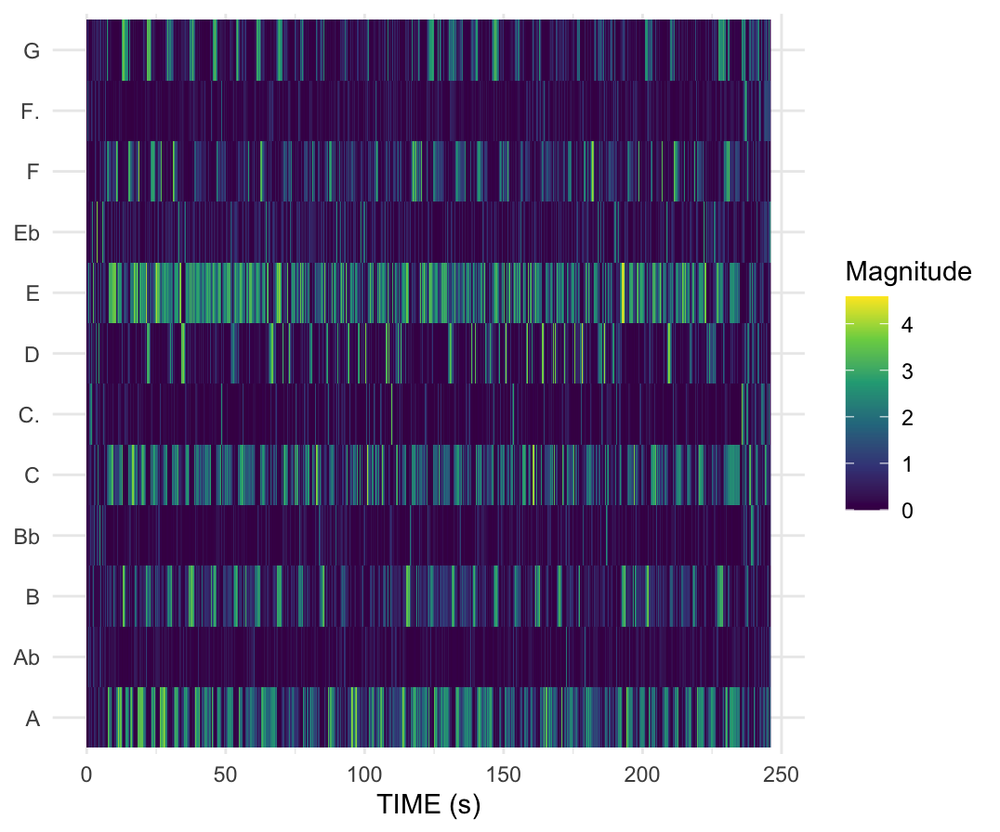
Chromagram of ‘Oxytocin’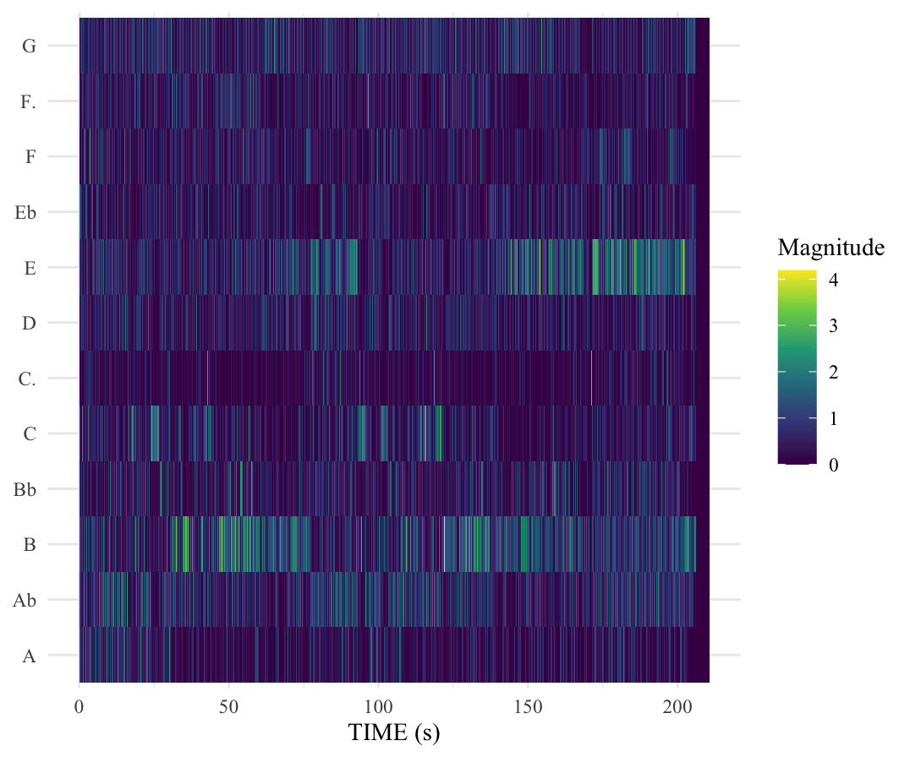
In the cepstrogram of “Be The One” there are multiple things that are interesting to take a closer look at. The first and most noticeable thing is the overall consistency in the frequencies that are visible. There are clear and visible horizontal lines throughout the whole duration of the song. This means that the overall timbre of the song stays relatively steady, and that there are few abrupt changes. This is fitting as many pop songs tend to have a very stable sound.
Secondly, the mfcc_02 has a very strong presence. The lower coefficients of a cepstrogram relate to the global sound of a track. The strong presence can be explained by the consistent presence of the bass, drums and synthesizers. Although the mfcc_02 is the most present coefficient, it is also the most fluctuating coefficient. This can be because these frequencies are very decisive for the overall shape of the song. The changes between verse and chorus are defined by these frequencies, which is visible in the cepstrogram as there is a spike in the mfcc_02 when the chorus starts.
Although the cepstrogram shows very steady coefficients throughout the song, there are some slight variations around 80s and 120s. This could be linked to the choruses that are playing at those times. Choruses often have some extra backing vocals or more instrumental layering, which could explain the fluctuation of the coefficients. Another variation can be spotted around 160/170s, which can be explained by the softer bridge of the song. There is less instrumentation and softer singing.
Overall, the cepstrogram of “Be The One” shows a very stable distribution of coefficients, which is very much fitting the sound of the song.
In the cepstrogram of “Don’t Start Now” the mfcc_02 shows the most movement. It is the most present coefficient, but also the most fluctuating. The lower coefficients, which include the mfcc_02, provide information about the global sound of the song. This fluctuation can be explained by the changes in the bass and drums of the song. These two play a big role in defining the rhythmic feeling of a song. This is fitting, because the song is very groove-oriented, and transitions from verse to chorus are audible very well. When comparing the sound of the song to the cepstrogram, the fluctuations of the mfcc_02 seem to fit very well.
Apart from the mfcc_02 in the lower region, it is clear that the entire lower region is more present and variating than the higher region. This means that the overall sound and timbral qualities of the song show some variations, but that there are few differences on a more detailed level. There are clear differences in sound between verses and choruses, but on a more detailed level the song seems to sound very equal. When listening to the song, you can also hear this. There are clear transitions between parts of the song, but there are not a lot of small differences between parts.
In conclusion, the cepstrogram of “Don’t Start Now” seems to be very suitable to the sound of the song.
The cepstrogram of “Your Power” once again shows the strongest presence from the mfcc_02. In this cepstrogram it is mostly steady and shows little fluctuations. This means that the overall sound and timbral feeling of the song is steady. This matches the way the song sounds when listening to it. It is a very slow and calm song with few abrupt changes, and that fits the presence of the mfcc_02.
Not only the mfcc_02 is consistently present, but most other coefficients are very stable. There are some small changes in the lower regions, but these seem to be more gradual changes instead of abrupt changes. The higher regions of the cepstrogram show little changes.
Overall, this cepstrogram pictures a steady overall sound of a song, which is very fitting to “Your Power”.
Lastly, the cepstrogram of “Oxytocin” also shows some interesting images. Like the first three songs, “Oxytocin” also shows a dominant presence of the mfcc_02. This is similar to the other songs, however, in this cepstrogram the mfcc_04 also has a very dominant presence. Their dominance can be justified by the strong bassline and beats that define the song. When listening to the song you hear these two being the fundamental base of the song, which supports their strong presence.
When looking at the cepstrogram there are two moments that visibly stand out. Around 75 seconds and 175 seconds there is an abrupt change in magnitudes. These two moments are two pauses in which the song is almost completely silent right before a beatdrop. These are some abrupt changes in sound and timbre and therefore clearly visible in the cepstrogram.
In conclusion, the sound of the song seems to be quite steady, although there are some nice fluctuations visible which fit the sound of the song.
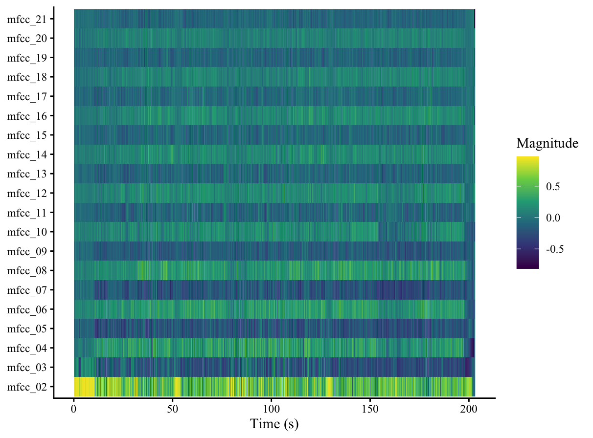
Cepstrogram of ‘Don’t Start Now’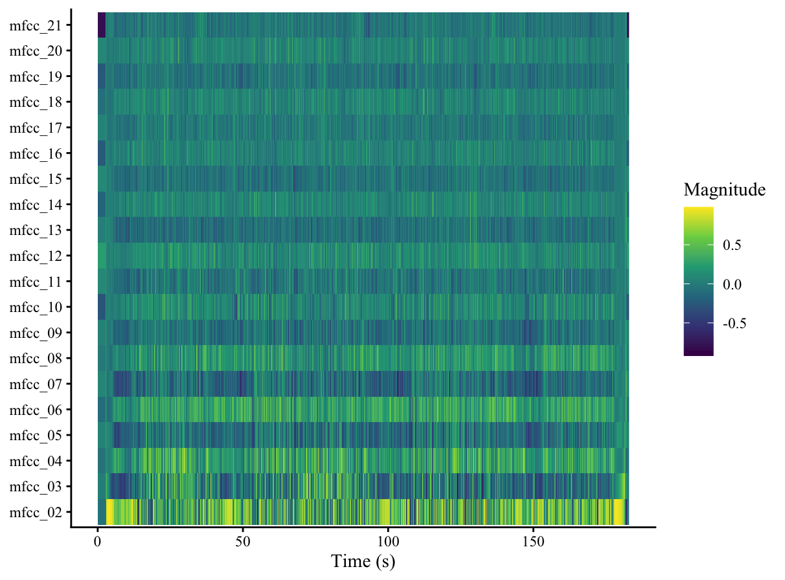
Cepstrogram of ‘Your Power’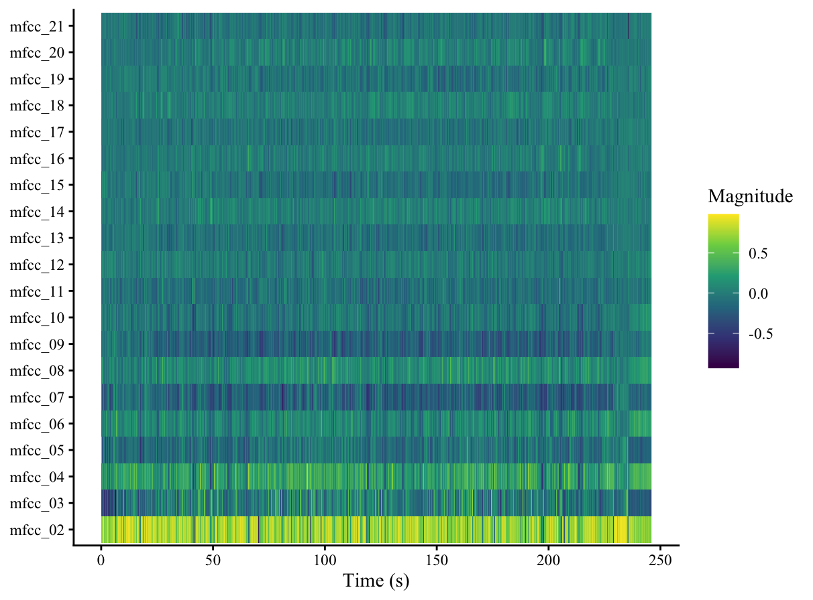
Cepstrogram of ‘Oxytocin’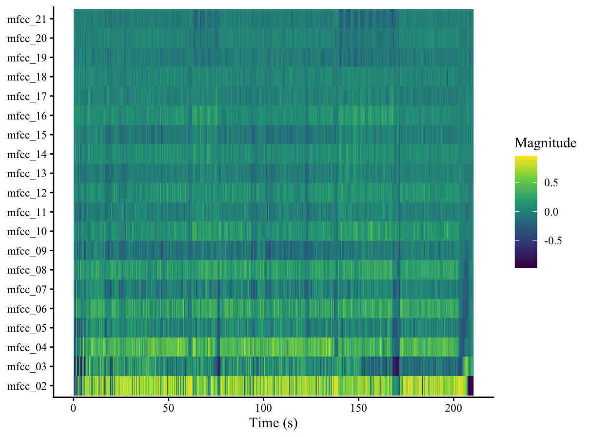
The self-similarity matrix of “Be The One” shows a highly structured and consistent pattern of vertical and horizontal lines. This demonstrates the high grade of repetition in the song. This pattern of repetition is consistent throughout the whole song. This matches the repetitive character of the song.
Nearing the end, around 185 seconds, the light colored line indicates a breaking point in the repetitive character of the pattern. This matches the part in the song where the bridge transitions into the last chorus.
This self-similarity matrix shows a pattern that would be expected for a standard pop song like “Be The One”.
The self-similarity matrix of “Don’t Start Now” shows many square and rectangular blocks. These blocks suggest different sections in the song, which correspond with the verses and choruses. For example: there are four blocks around the diagonal line. Each lasting around 50 seconds. The first and second block look quite similar, but the third block has a different pattern compared to the first two blocks. This is explained by the fact that this part of the song is the bridge.
The bright blocks indicate repetition. This is reflected in the structure of the song, which consists of a verse, followed by a chorus, another similar verse and repetition of the chorus, bridge and one final repetition of the chorus. The bright yellow lines indicate the transitions between the verses and choruses, which mark the borders of the square blocks that are visible.
This pattern with a clear structure and many repetitions is also typical for a pop song like “Don’t Start Now”.
The self-similarity matrix of “Your Power” shows a very steady repetitive pattern. There are less clear blocks than in the previous song. This is caused by the fact that “Your Power” is not a song with distinct differences between verse and chorus. It is a song without accelerations, it has a very consistent rhythm, chord scheme and strumming pattern. The many repeating bright lines show a more continuous repetition of parts of the song, there is no clear division into sections.
This pattern is typical for an acoustic song like “Your Power” and a bit different from the typical pop songs.
The self-similarity matrix of “Oxytocin” shows that the song can be divided into three clear sections, as presented by the three visible square blocks around the diagonal line. The first two blocks are very similar, the third block is slightly different. The thin bright yellow lines at the beginning and ending of the first two blocks, indicate the transition. This can be heard in the song as a small pause. The thick yellow line in the third block represents a longer pause within the third section of the song.
Like the previous song, this song is also not divided into the typical verse/chorus structure of standard pop songs.
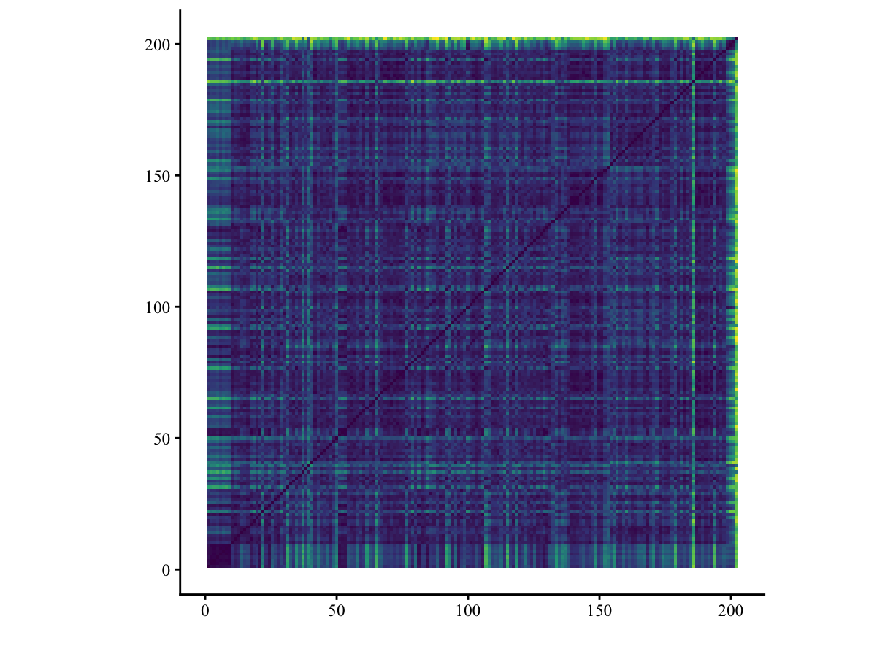
Self-Similarity Matrix of ‘Don’t Start Now’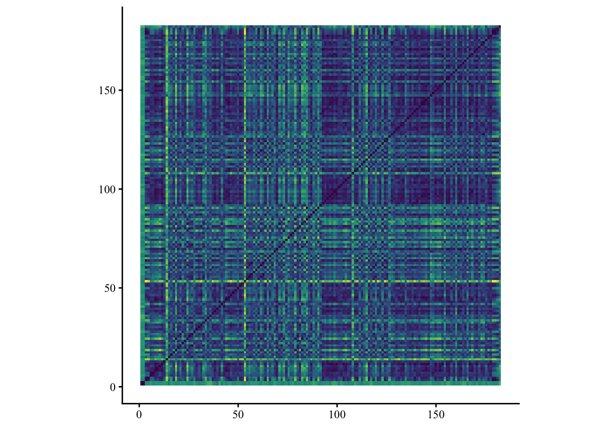
Self-Similarity Matrix of ‘Your Power’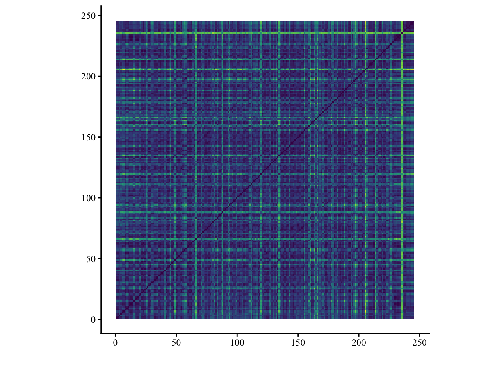
Self-Similarity Matrix of ‘Oxytocin’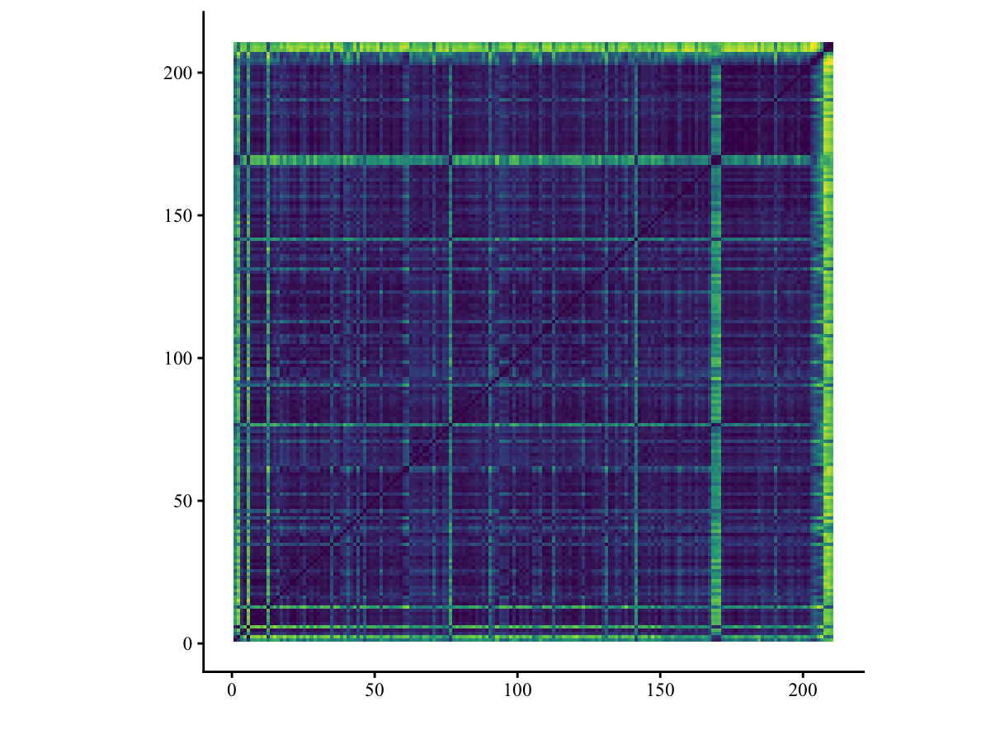
This keygram shows what key “Be The One” by Dua Lipa is most likely in. F major and seems to be the darkest and therefore the most likely to be the key of the song. Bb major is another possible key.
This keygram shows what key “Don’t Start Now” by Dua Lipa is most likely in. B minor and E minor both seem to have a high possibility to be the key of the song.
This keygram shows what key “Your Power” by Billie Eilish is most likely in. There is one key that stands out in this keygram: A minor. C major also seems like a good candidate.
This keygram shows what key “Oxytocin” by Billie Eilish is most likely in. E minor stands out in the graph and seems like a good candidate. However, B major and E major also seem like possibilities.
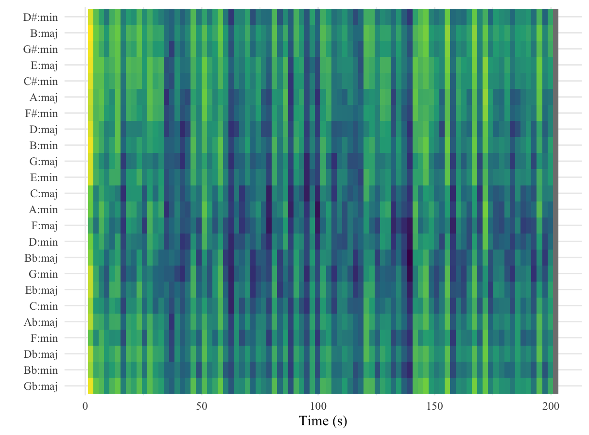
Keygram of ‘Don’t Start Now’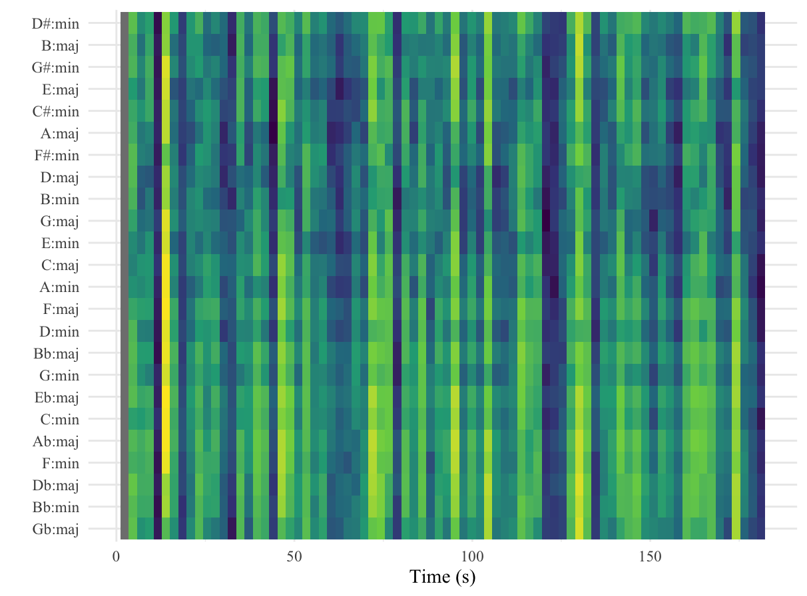
Keygram of ‘Your Power’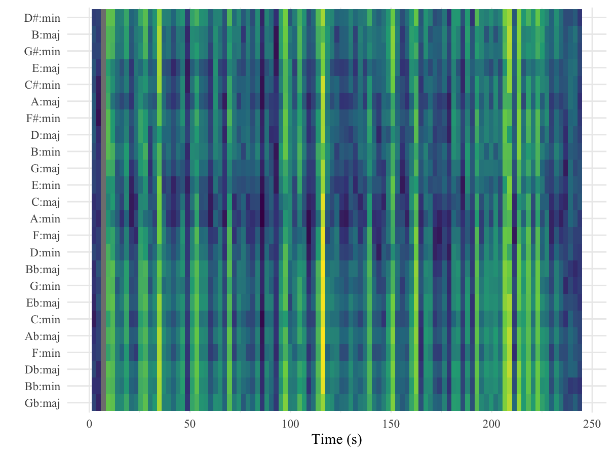
Keygram of ‘Oxytocin’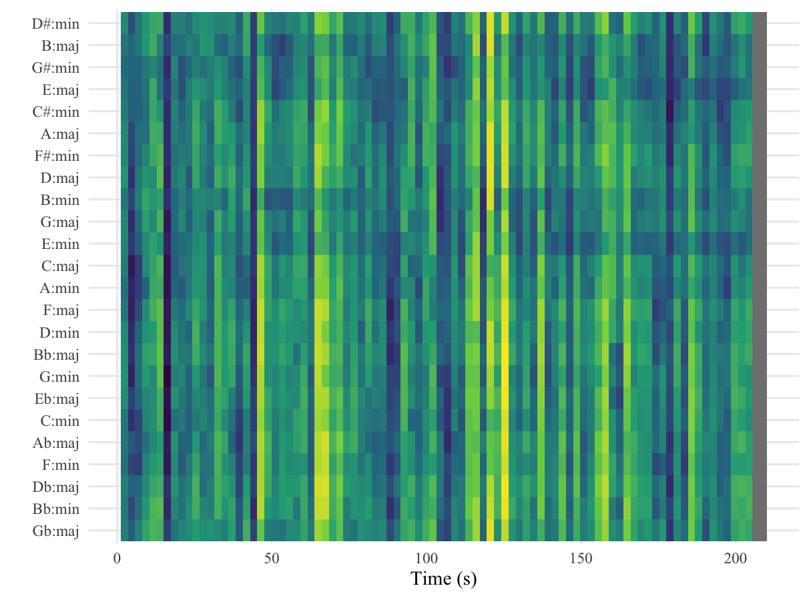
In this chordogram of “Be The One” there are a few chords that stand out and are likely to be used frequently in the song. F major, F7, D minor, Eb minor and Eb7 are most visible in the chordogram. This aligns with the suspected key of F major.
In this chordogram of “Don’t Start Now” the E7 chord stands out the most, as it is immediately visible. Other chords that seem to occur a lot are B minor, A7, A minor, E minor, D7 and D major. As E minor and B minor are possible candidates for the key, these chords lead a little bit more towards B minor.
In this chordogram of “Your Power” by Billie Eilish A minor seems to be the chord that is used most frequently. This makes a lot of sense, as A minor also seems to be the key. E minor and D minor also occur much, which aligns with A minor as the key of the song.
In this chordogram of “Oxytocin” by Billie Eilish E7, G7 and C7 seem to be frequently used in the song.
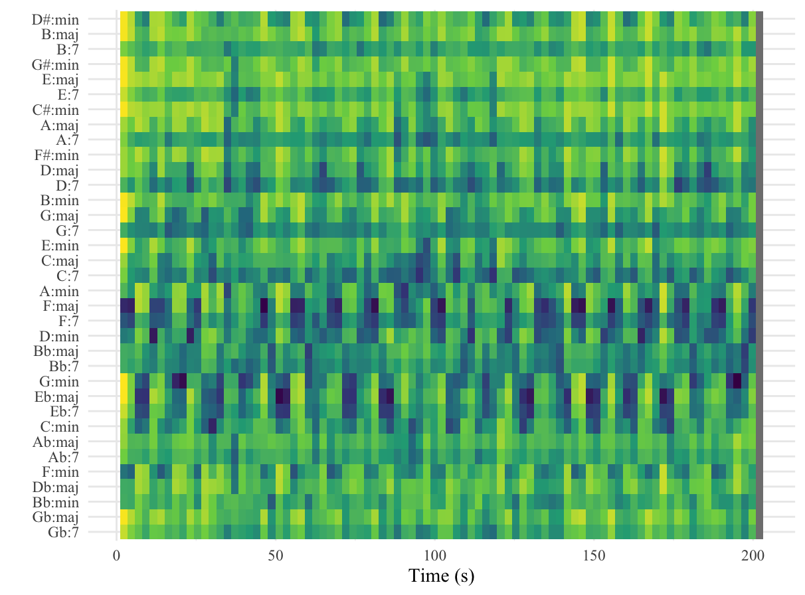
Chordogram of ‘Don’t Start Now’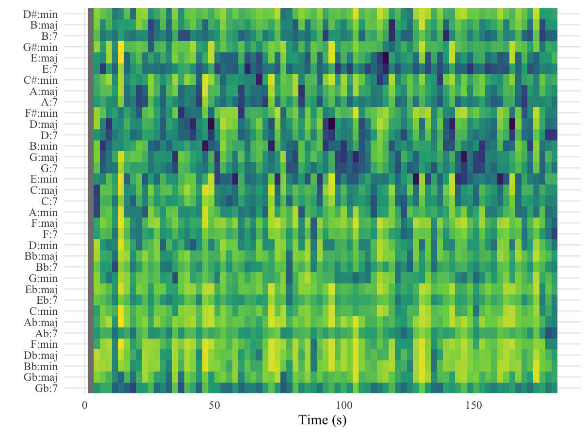
Chordogram of ‘Your Power’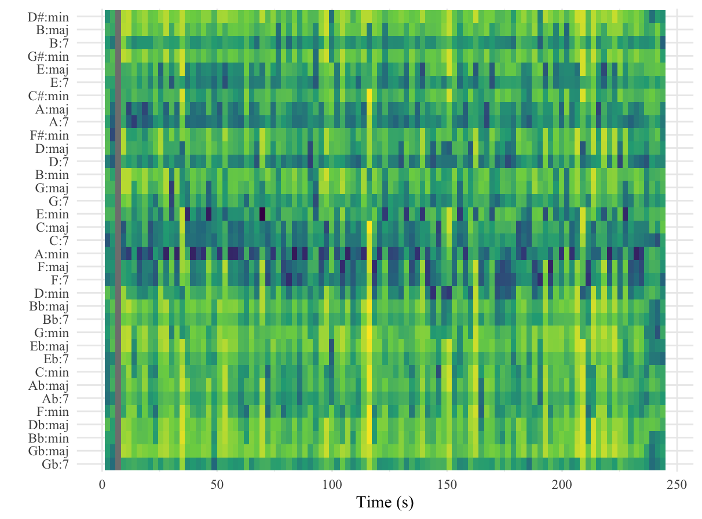
Chordogram of ‘Oxytocin’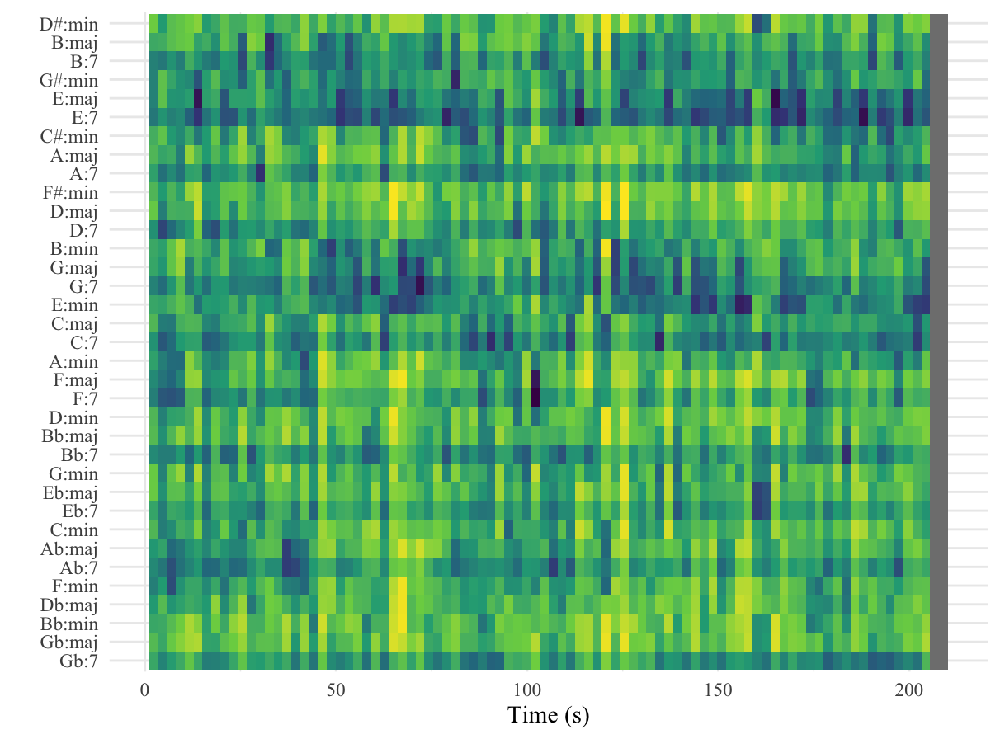
This portfolio was designed to investigate differences in musical features between Dua Lipa and Billie Eilish.
Track-level analysis indicates differences in energy levels, valence levels and danceability levels between both artists’ selected repertoire. The music by Dua Lipa has higher energy levels, higher and less diverse valence levels and much higher danceability levels than Billie Eilish’s music.
The analysis of chroma features, key estimation and chord estimation don’t seem to contribute a lot to the comparison between the different sounds of both pop artists. It is possible that the analysis should contain many more songs to find a distinct pattern or draw a feasible conclusion.
The cepstrograms show that the selected Dua Lipa songs have much more variance in overall timbral sound than the songs by Billie Eilish. The latter show a more consistent timbral flow.
The self-similarity matrices seem to contribute most to the conclusion on the differences between the music of Dua Lipa and Billie Eilish. The songs by Dua Lipa are clear examples of standard pop songs, while the songs by Billie Eilish have a less standard pattern.
In conclusion, both artists belong to the same genre: pop music. However the fact that the music of these artists sounds different, is confirmed by these analyses.